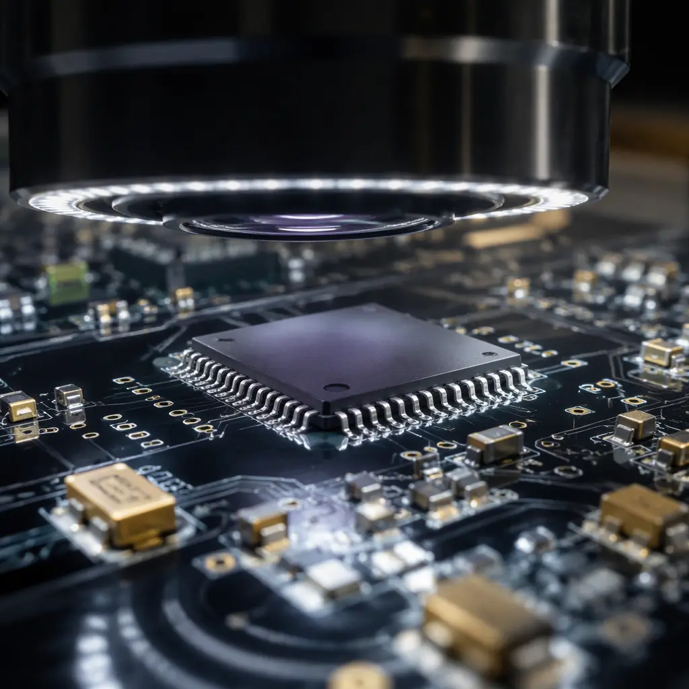
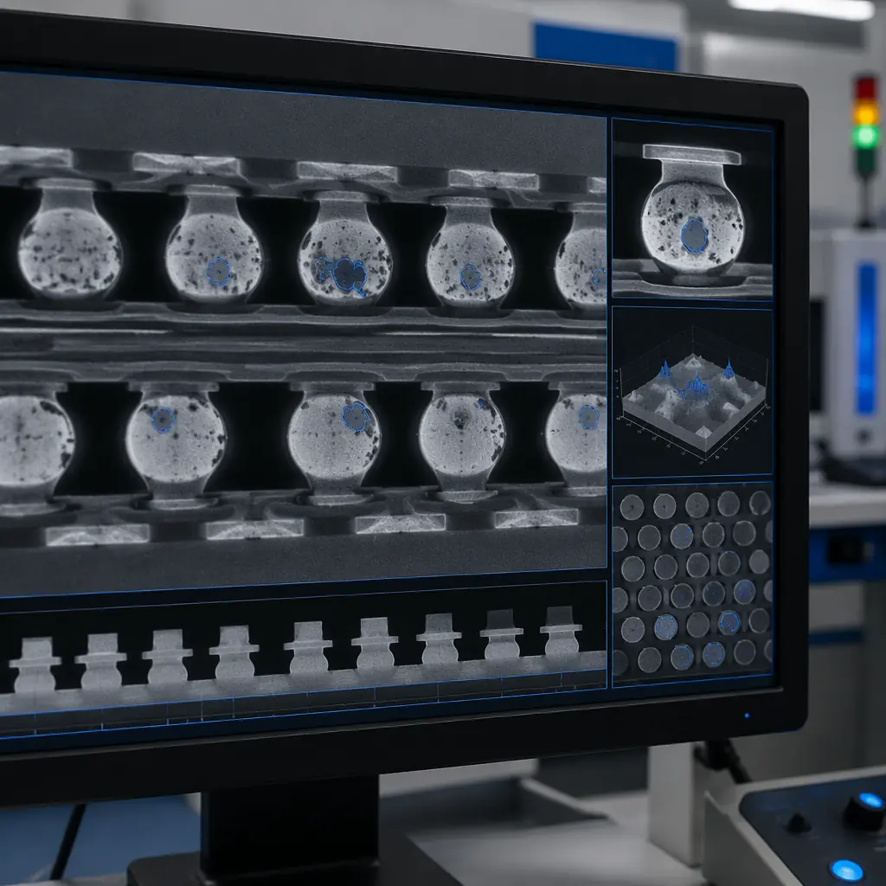

Every PCB assembly line has inspection stations. But not every inspection station catches the defects that matter for your product. A Class 2 consumer board and a Class 3 aerospace board might pass through the same AOI machine — yet one customer receives a perfectly functional product while the other discovers intermittent opens three months into field deployment. The difference isn't the equipment. It's the inspection strategy: which technologies you deploy, at which process steps, with which acceptance criteria.
At Huaxing PCBA, our eight SMT lines integrate AOI, SPI, and X-Ray inspection at multiple process gates — not as checkbox items, but as a layered defense that has reduced customer-visible defect escapes to below 50 DPPM across production volumes exceeding 1.2 million assemblies per month. This guide breaks down what each inspection method actually sees, what it misses, and how to combine them for your product class.

Why One Inspection Method Is Never Enough
Every inspection technology has a physics-defined blind spot. AOI sees surface features — component presence, polarity, solder fillet shape — but cannot see through a BGA to check ball collapse. X-Ray penetrates hidden joints but cannot measure solder paste volume before reflow. SPI quantifies paste deposition but has no visibility into post-reflow joint quality. Deploying only one method is like securing one door of a building with three entrances.
The cost of single-method inspection compounds with product complexity. A 1,200-component automotive ECU with 14 BGAs and 22 QFN packages may pass AOI with zero flagged defects — yet harbor a 15% void under a BGA that X-Ray would have caught. That single missed defect becomes a field failure with warranty costs exceeding the entire assembly run margin. This is why IPC-A-610 Class 3 explicitly requires X-Ray for hidden solder joints, and why the IPC class your product targets should dictate your inspection mix.
Key Insight: The most dangerous defect is not the one your inspection misses — it's the one your inspection cannot physically detect. Building an inspection strategy starts with mapping your product's defect profile against each technology's detection envelope.
Automated Optical Inspection (AOI): The First Line of Defense
AOI uses high-resolution cameras — typically 2D, increasingly 3D with laser triangulation or fringe projection — to capture images of every solder joint and component placement on an assembled PCB. The system compares captured images against a golden board reference or a CAD-derived digital model, flagging deviations in solder fillet geometry, component offset, tombstoning, missing components, and polarity errors.
2D AOI — Fast Coverage at Low Cost
Multi-angle LED lighting (top, side, angled) captures solder joint reflections from 3-5 angles. Modern systems achieve inspection speeds of 25-40 cm²/s with 10-15 μm pixel resolution. Best for: visible solder joints (SOIC, QFP, chip components), polarity checks, bridging detection. Typical defect coverage: 85-92% of all SMT defects. Per-board cost: $0.15-0.40 depending on board complexity and panel utilization. Huaxing runs 2D AOI on all 8 SMT lines as the primary post-reflow gate.
3D AOI — Measuring Solder Joint Co-Planarity
Adds height measurement via laser triangulation or Moiré fringe projection, enabling detection of lifted leads, insufficient solder volume, and co-planarity violations that 2D systems miss. Particularly valuable for QFN packages where side fillet visibility is limited. 3D AOI increases defect coverage to 93-96% for visible joints. The trade-off: inspection speed drops ~30% vs 2D, and the system cost is 2-3× higher. We deploy 3D AOI selectively on automotive and medical product lines where co-planarity is critical.
What AOI Cannot See
Hidden solder joints under BGAs, QFNs with full bottom termination, and press-fit connectors with internal pins. AOI also struggles with: mirror-like surface finishes (ENIG pads can cause false positives), components with transparent bodies (LEDs), and boards with heavy conformal coating applied before inspection. For these defect categories, X-Ray is the required complement — see our guide on BGA assembly inspection requirements for the full picture.
X-Ray Inspection: Seeing Through the Board
X-Ray inspection uses transmission imaging — firing X-rays through the PCB and capturing the absorption pattern on a digital detector — to visualize internal structures that no optical system can access. Modern systems use computed tomography (CT) or laminography to create 2D slice images at specific depths, isolating individual BGA ball layers from PCB pads and component bodies.

BGA & QFN Void Detection
X-Ray quantifies void percentage within each solder ball — the primary acceptance criterion for BGA joints per IPC-7095. A single ball with >25% void area can reduce thermal cycling lifetime by 40-60%. Our 3D X-Ray systems measure voids to ±2% accuracy across every ball in a 1,152-ball BGA in under 90 seconds. For designs with via-in-pad or microvia structures, X-Ray also verifies that vias are fully filled and plated-over — a defect class invisible to AOI. See our via fill technology comparison for related quality requirements.
Head-in-Pillow & Non-Wet Open Detection
Head-in-pillow (HiP) defects — where the BGA ball and solder paste make physical contact but fail to form a metallurgical bond — are nearly impossible to detect with AOI because the joint looks physically connected from the outside. X-Ray with oblique-angle imaging reveals the tell-tale gap line between ball and pad. HiP is the most dangerous BGA defect class because it passes electrical test at room temperature but fails after thermal cycling. Detection requires 3D X-Ray with at least 5-degree tilt capability.
2D vs 3D X-Ray: When the Upgrade Pays For Itself
2D X-Ray (transmission only) costs $80-150K and handles 80% of BGA/QFN inspection needs. 3D/CT X-Ray ($250-500K) becomes necessary when: your product has double-sided BGA placement, you're stacking package-on-package (PoP), or your end-customer requires CT slice images in the FAIR documentation package. For most industrial and automotive products, 2D X-Ray with oblique viewing angle is sufficient. Our facility runs both — 2D as the standard post-reflow gate, 3D CT for first-article inspection and failure analysis. Read about PCB failure analysis workflows for when to escalate.
SPI: Catching Defects Before They're Baked In
Solder Paste Inspection (SPI) measures every paste deposit before component placement — when rework costs $0.02 instead of $20. 3D SPI systems scan the entire stencil-printed board in 15-25 seconds, measuring paste height, area, volume, and positional offset for every pad.
Volume, Area, Height — Which Parameter Matters Most
SPI measures three dimensions of every paste deposit. Volume is the primary metric: IPC-J-STD-005 recommends ±30% volume tolerance for Class 2, ±20% for Class 3. Paste area drives the stencil aperture design and correlates with solder coverage. Height is the early warning for stencil wear — when mean paste height drops below 85% of stencil thickness across 20 consecutive boards, it's time to clean or replace the stencil. Our SPI systems flag boards that exceed any of these limits before a single component is placed, preventing entire batches of rework. For proper stencil design that maximizes SPI pass rates, see our SMT stencil design guide.
SPI + AOI Closed-Loop: The IPC-CFX Vision
When SPI and AOI systems share data through a common database (IPC-CFX or proprietary MES), the factory achieves closed-loop process control. SPI detects a trend of insufficient paste on a specific QFP footprint → the system alerts the stencil printer to increase pressure on that zone → AOI at the end of the line confirms the correction worked. Without closed-loop, each inspection station is an island; with it, the line self-corrects. This is the direction the industry is moving, and it's the only way to sustain sub-50 DPPM defect rates at high volume.
Building Your Inspection Strategy: A Decision Matrix
| Product Requirement | Minimum Inspection Mix | Estimated DPPM | Cost/Board |
|---|---|---|---|
| Class 2 consumer, no BGA | SPI + 2D AOI | 200-500 | $0.30-0.60 |
| Class 2 industrial, BGA present | SPI + 2D AOI + 2D X-Ray | 100-200 | $0.80-1.50 |
| Class 3 automotive/medical | SPI + 3D AOI + 2D X-Ray + ICT | 20-50 | $2.00-4.00 |
| Class 3 aerospace/defense | SPI + 3D AOI + 3D X-Ray CT + ICT + functional test | <10 | $5.00-12.00 |
The table above represents statistical averages across our production data. Actual DPPM depends heavily on board complexity, component mix, and volume. A 200-BOM-count IoT board with a single BGA will have lower defect rates than a 1,500-BOM-count server board with 18 BGAs — even with identical inspection equipment. The inspection strategy must be calibrated to the product, not copied from a generic standard.
Procurement Tip: When evaluating a PCBA supplier, ask not just "Do you have AOI and X-Ray?" but "What is your inspection gate sequence, and what are the acceptance criteria at each gate?" A supplier with AOI before reflow (inspecting placement accuracy) and after reflow (inspecting solder joint quality) is doing twice the value of a supplier running AOI only post-reflow.
Electrical Test: The Final Verification Layer
Inspection finds physical anomalies. Electrical test confirms they actually matter. Flying probe, ICT, and functional test are the downstream gates that catch what upstream inspection missed — and critically, they catch defects that are electrically significant but visually subtle. A BGA ball with 12% voiding passes X-Ray but may have reduced current-carrying capacity that only a four-wire Kelvin measurement can detect. See our full breakdown of electrical test methods and when each applies.
What This Means for Your Next PCB Order
Inspection is not a line item on a quote — it's the difference between receiving boards that work and boards that fail in the field. The right inspection mix for your product depends on component technology, end-use environment, and the cost of failure. At Huaxing PCBA, we deploy SPI, 2D/3D AOI, and 2D/3D X-Ray across our eight SMT lines, with inspection data feeding into a centralized quality database that tracks defect trends by product, by line, and by shift. Every board ships with a digital inspection record — not just a "QC passed" stamp.